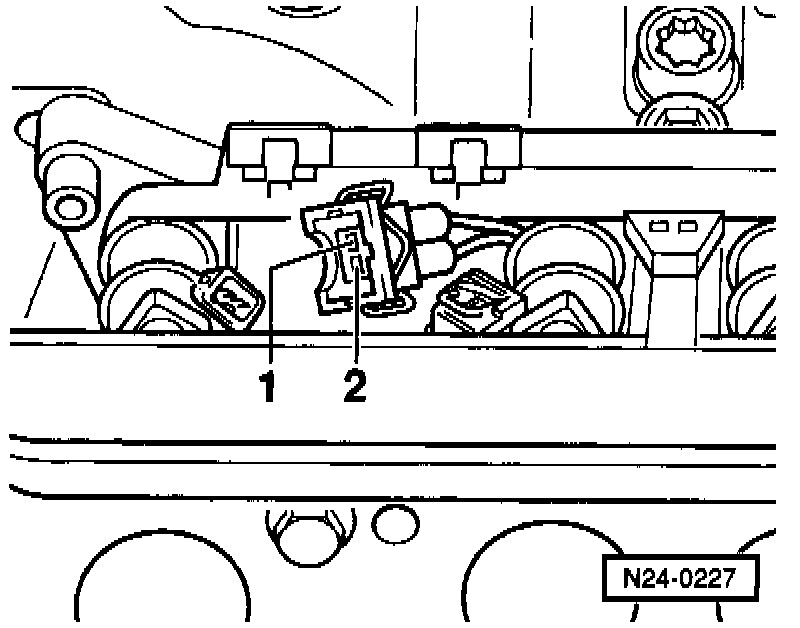
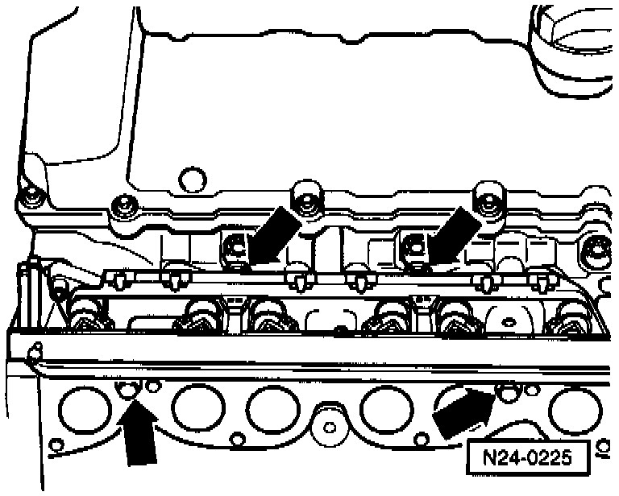
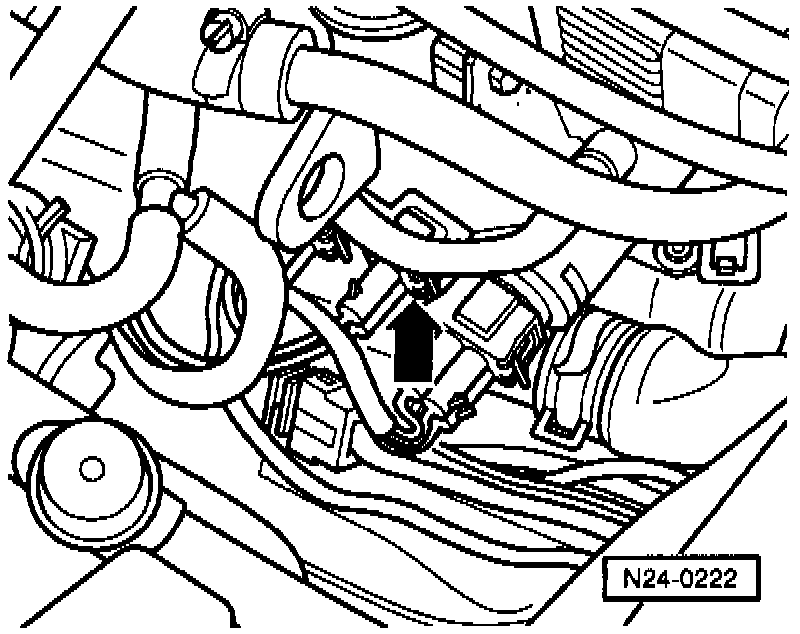

Fuel Injector: Testing and Inspection
Checking activation:Check activation of fuel injectors See Output Diagnostic Test Mode (DTM). Testing and Inspection
Special tools, testers and auxiliary items:
- VAG 1598/18 test box.
- Multimeter (Fluke 83 or equivalent).
- VAG 1527B voltage tester.
- Connector test kit VW 1594.
- Wiring diagram.
Check conditions:
- Engine speed sensor OK.
- Fuel pump relay OK.
Test sequence:
- Remove intake manifold, upper.
- Disconnect 5-pin connector from ignition coil.

- Disconnect harness connector -1- from connection -2- and connect VAG 1527B voltage tester with test leads from VW 1594 to the terminals of the harness connector.
- Disconnect harness connectors from fuel injectors 2-6.
- Operate starter and check the voltage supply for no. 1 cyl. fuel injector.
- LED must flicker
- Repeat check on fuel injectors 2-6.
If the LED does not flicker:
- Switch ignition off.

- Connect VAG 1598/18 test box to ECM wiring harness (arrow).

- Check wiring between test box and connector for open circuit according to wiring diagram.
- No. 1 cyl. fuel injector: terminal 2 and test box socket 24.
- No. 2 cyl. fuel injector: terminal 2 and test box socket 25.
- No. 3 cyl. fuel injector: terminal 2 and test box socket 26.
- No. 4 cyl. fuel injector: terminal 2 and test box socket 02.
- No. 5 cyl. fuel injector: terminal 2 and test box socket 03.
- No. 6 cyl. fuel injector: terminal 2 and test box socket 04.
Resistance: max.1.5 ohms.
- Check wiring between fuel injector connector terminal 1 and relay panel for open circuit according to wiring diagram.
Resistance: max. 1.5 ohms.
- Additionally, check wires for short circuit to one another.
Specification: infinite ohms.
Checking resistance of fuel injectors

- Check resistance of fuel injectors individually.
Specification: 15-21.5 ohms.
If the specification is not attained, replace fuel injector(s) as necessary.
Checking spray pattern and for leaks
WARNING:
- DO NOT smoke or work near heaters or other fire hazards when working on fuel system.
- The fuel system is pressurized! Before loosening hose connections or opening the test connection, wrap a cloth around the connection. Then release pressure by slowly disconnecting the hose/fitting.
Special tools, testers and auxiliary items:
- Connector test kit VW 1594.
- VAG 1630 digital potentiometer.
- VAG 1602 fuel analyzer.
- Remove intake manifold, upper.

- Remove fuel rail complete with fuel injectors.
- Hold fuel injectors in VAG 1602 fuel analyzer.

- Disconnect harness connector from Engine Coolant Temperature (ECT) sensor -G62-.
- Disconnect 5-pin connector from ignition coil.

- Set VAG 1630 digital potentiometer side A to 15 K Ohms and using test leads from VW 1594 connect to terminals 1 and 3 of disconnected harness connector
- Operate starter (second technician required).
- The fuel injectors must pulsate and spray in accordance with firing order
- Switch ignition off and check fuel injectors for leaks.
- No more than 2 drops/minute may leak from each fuel injector.
NOTE:
When installing the fuel injectors make sure that the O-rings are not damaged.